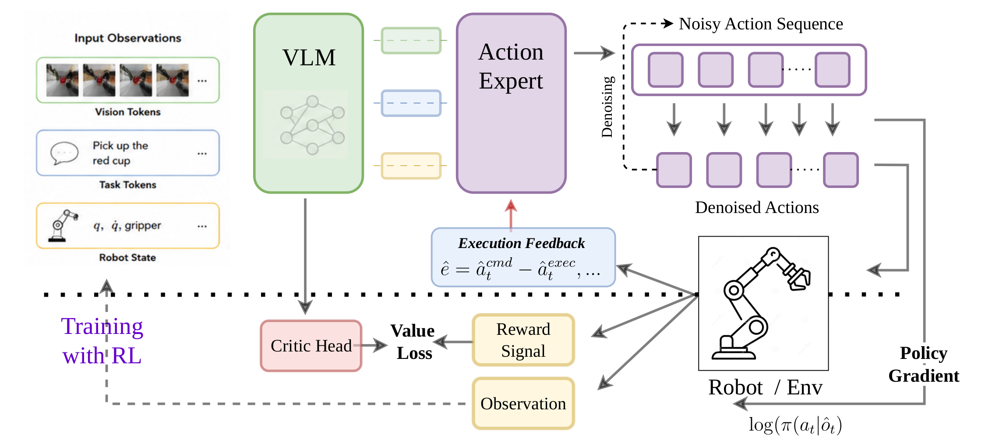
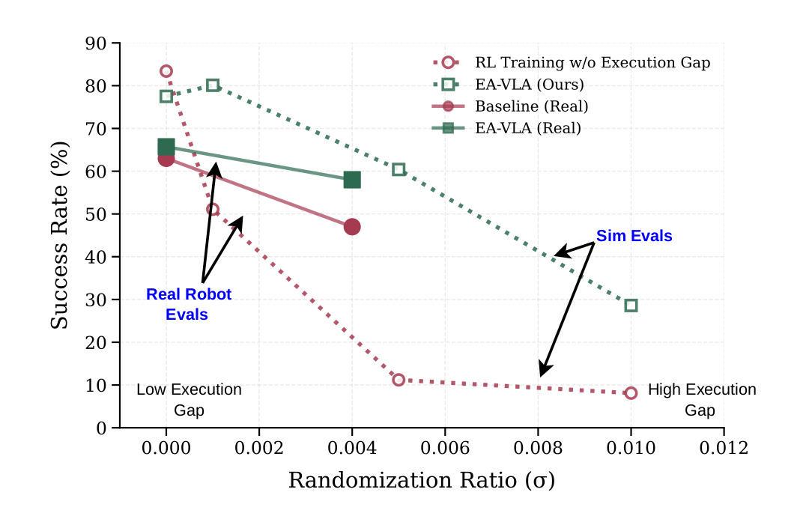

Closing the gap between the actions a policy commands and the motion a robot actually executes.
Under Review
TL;DR
Most VLAs treat the low-level execution interface as fixed and reliable. Real robots don't: tracking error, latency, actuator saturation and calibration drift open an execution gap that quietly breaks contact-rich tasks. EA-VLA augments policy inference with execution-state feedback and adapts pretrained VLAs through RL over randomized controller dynamics in simulation — learning to compensate for that gap.
Method

A pretrained VLM + action expert is conditioned on robot state and execution feedback ê = âẓ − âẽ, then fine-tuned with RL in ManiSkill under domain-randomized controller dynamics — exposing the policy to a broad range of execution gaps without real-robot data.
Results

Success rate vs. execution-gap magnitude (randomization ratio σ). EA-VLA (green) degrades gracefully where the baseline collapses — in both simulation (dotted) and on the real robot (solid).
Real-robot rollouts (Franka). EA-VLA vs. π₀.₅ (fine-tuned). EA-VLA is markedly more robust to the execution gap, recovering from tracking error to land more successful grasps per episode.
ManiSkill simulation — success rate across randomization ratio σ
| Model | σ=0.0 | σ=0.001 | σ=0.005 | σ=0.01 | σ=0.02 | σ=0.05 |
|---|---|---|---|---|---|---|
| Supervised baseline | 48.7% | 49.7% | 14.2% | 4.3% | 2.9% | 2.5% |
| RL, no execution gap | 83.4% | 51.1% | 11.2% | 8.1% | 4.4% | 2.2% |
| EA-VLA (Ours) | 77.5% | 80.1% | 60.4% | 28.6% | 6.1% | 2.6% |
Baselines overfit to nominal dynamics and collapse under minor drift; EA-VLA stays robust across two orders of magnitude more perturbation.
Zero-shot sim-to-real (WidowX)
| Policy | Low gap | High gap |
|---|---|---|
| Baseline | 0.63 | 0.47 |
| EA-VLA | 0.66 | 0.58 |
Under true proprioceptive feedback (high gap), the baseline degrades sharply while EA-VLA holds.
Ablation — state-history length H
| H | σ=0.0 | σ=0.001 | σ=0.005 | σ=0.01 |
|---|---|---|---|---|
| 0 (none) | 83.4% | 51.1% | 11.2% | 8.1% |
| 1 | 70.3% | 70.5% | 51.7% | 22.2% |
| 2 (default) | 77.5% | 80.1% | 60.4% | 28.6% |
| 4 | 76.3% | 76.3% | 60.3% | 26.4% |
Execution awareness drives the gains; H=2 balances robustness and cost.